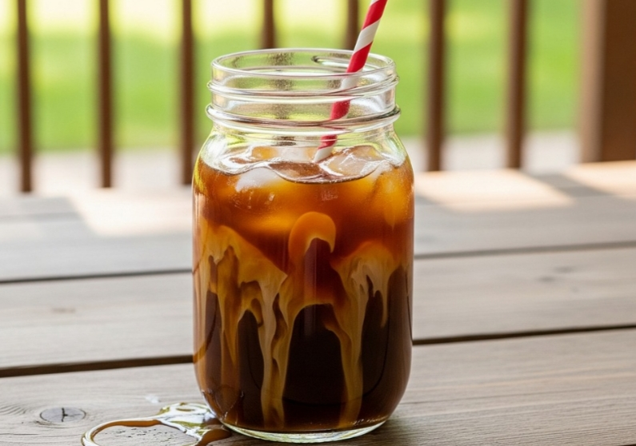
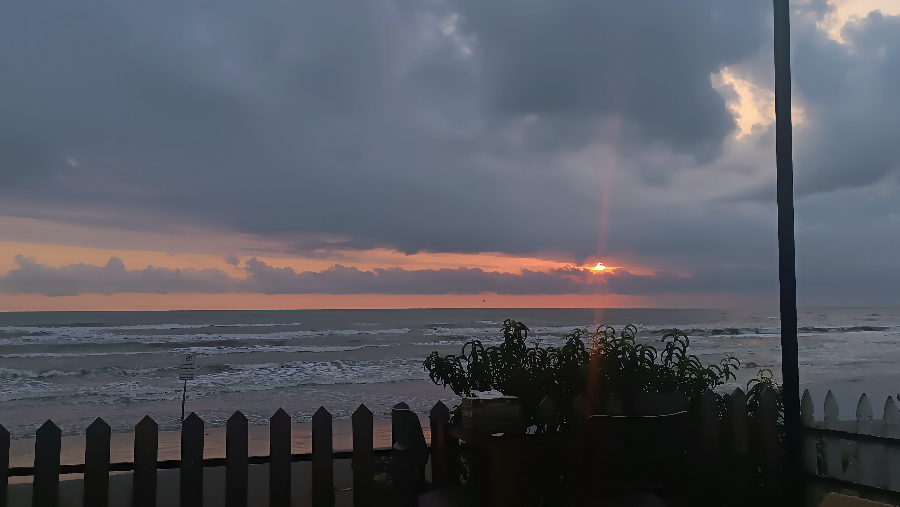
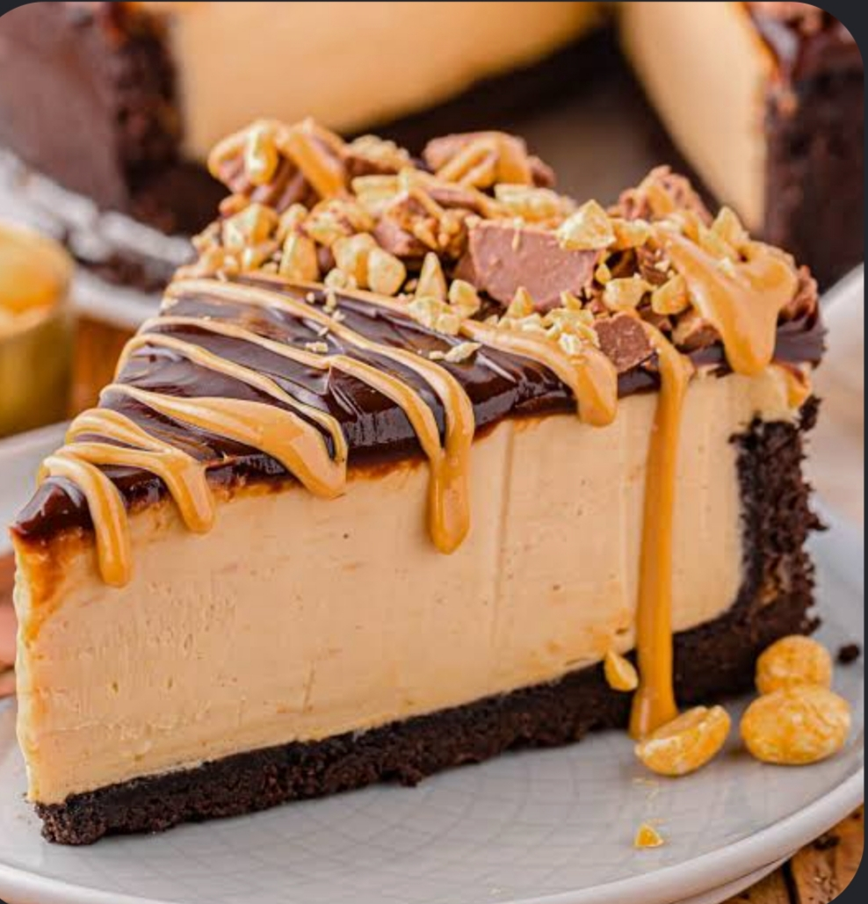
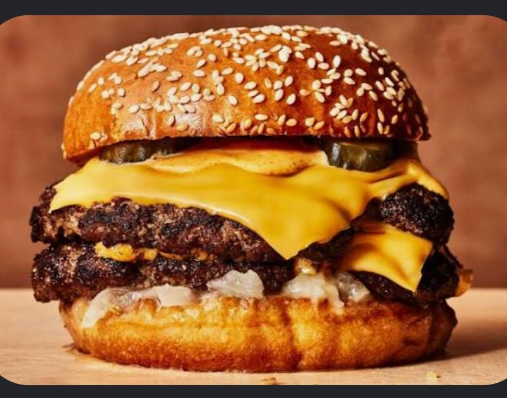
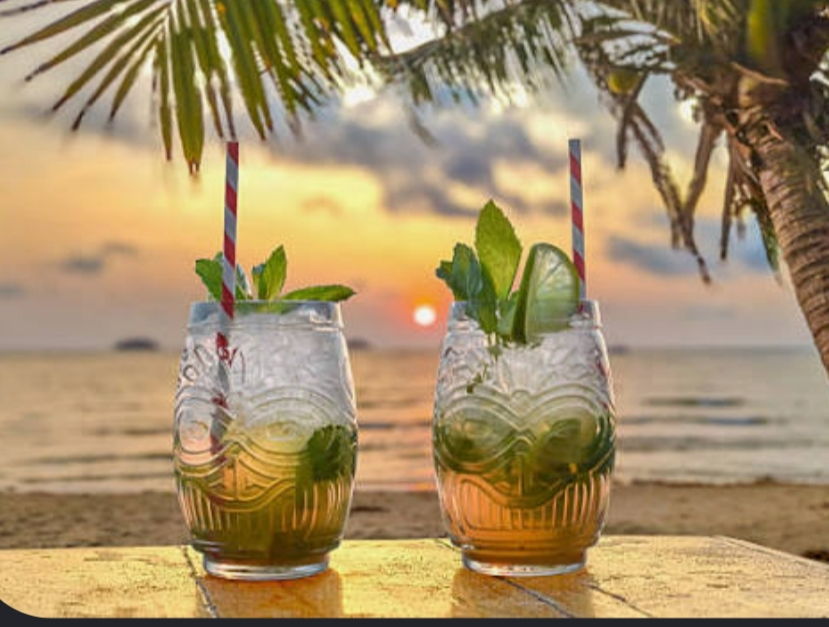
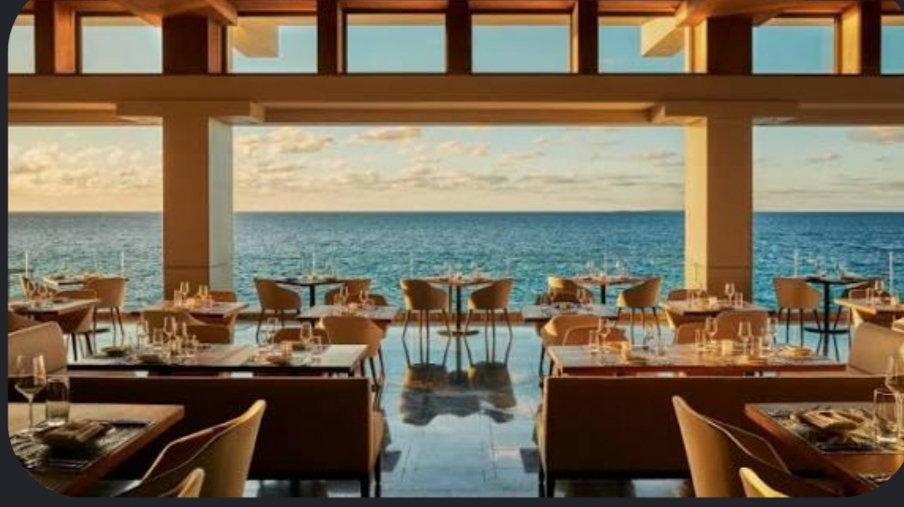
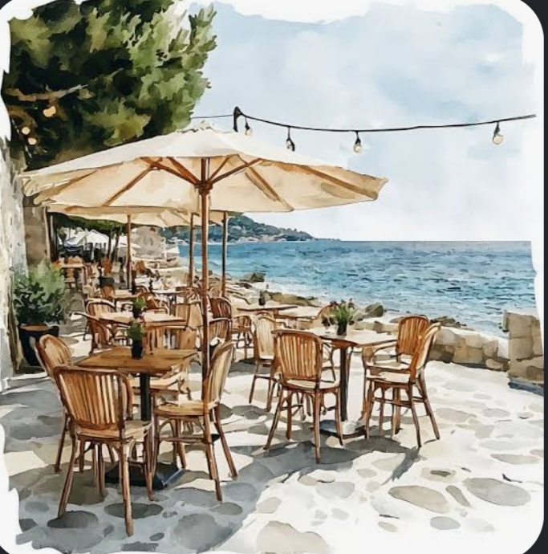
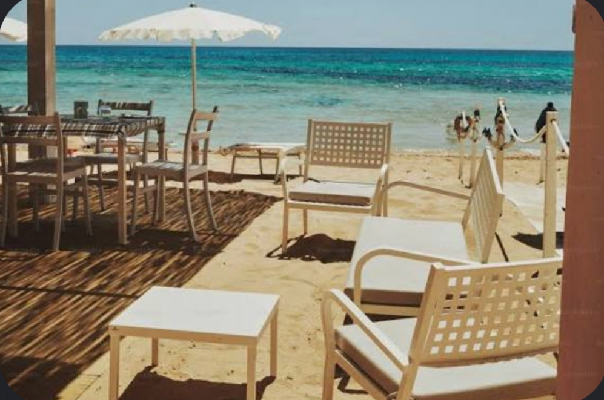

آیس لته
اسپرسو، شیر و یخ
آرامشی از جنس دریا
جایی برای تماشای دریا، لمس آرامش، و ساختن لحظه های به یاد ماندنی
منوی مادرباره ی شین
کافه شین جایی است برای فراری کوتاه از شلوغی روزمره. جایی کنار دریا که میتوانی با یک فنجان قهوه یا یک غذای دلچسب و صدای امواج دریا ، لحظه ای برای خودت زندگی کنی.
بیشتر درباره ی شین
انتخاب شین

اسپرسو، شیر و یخ

چیزکیک مخصوص شین

برگر با سس مخصوص شین

تازه و خنک مخصوص تابستان
فضای شین
از صدای موج ها تا نورپردازی، همه چیز در شین دست به دست هم میدن تا حتی برای لحظه ای از این دنیا و واقعیت هاش جدا شید.
مشاهده عکس ها


لب ساحل - خیابان دریا - کافه شین
به صورت شبانه روزی، حتی روزهای تعطیل
09*********
نظر شما برای ما با ارزشه.
پیشنهادها، انتقادها، نظرات و تجربه های خودتون از حضورتون در شین رو با ما به اشتراک بگذارید؛ شاید برنده ی این ماه شما باشید.
ثبت نظر